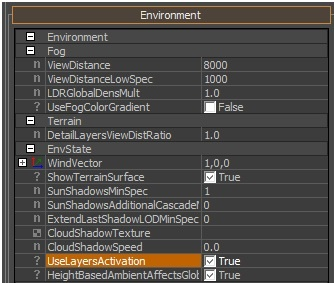
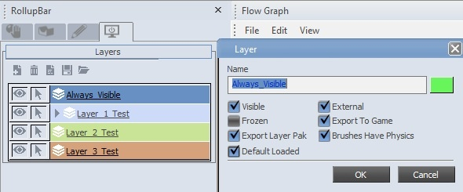
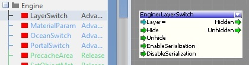
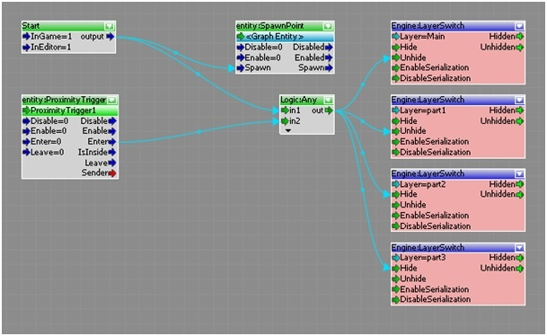
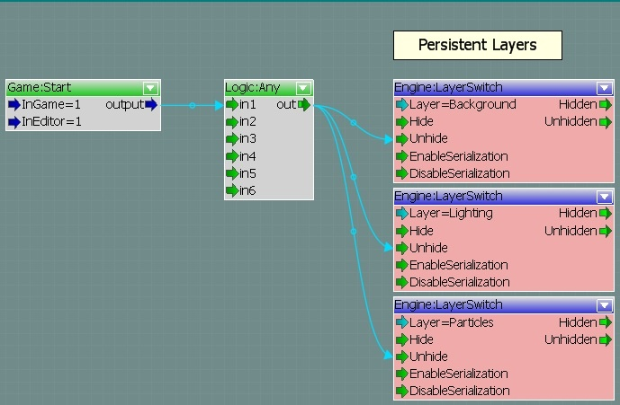
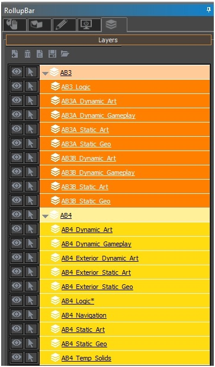
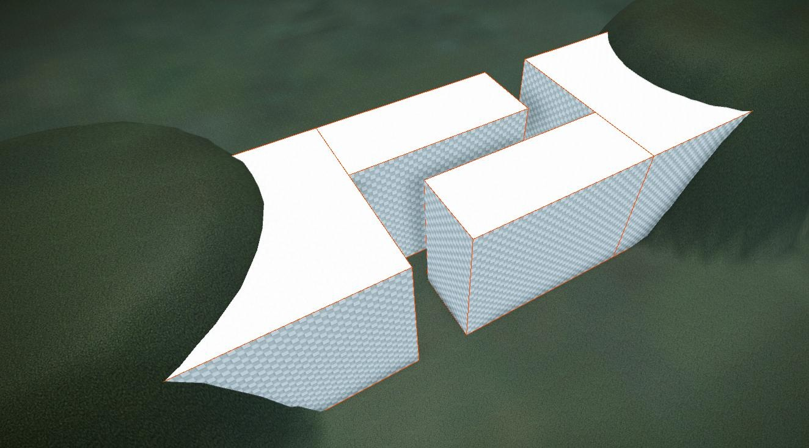
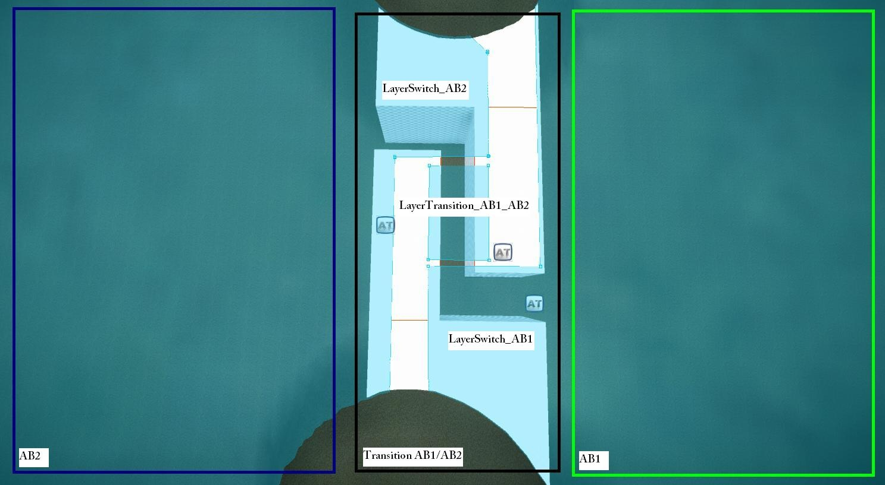
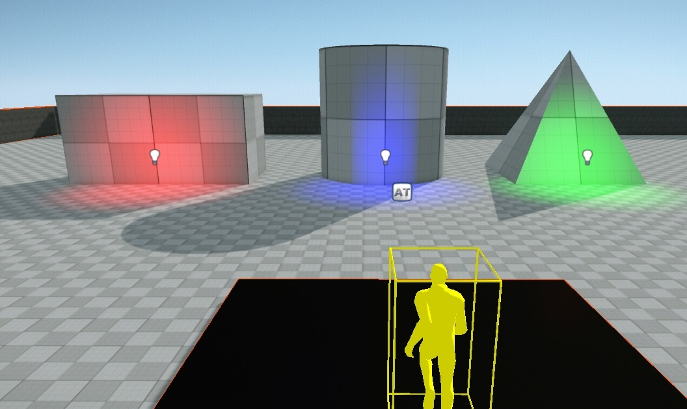

Overview
Layer Streaming controls the visibility of all entities and geometry in real time. Without an efficient layer switching setup full levels will run into the boundaries of current generation consoles pretty quickly.
Making use of this system will enable you to have bigger and more detailed levels running, even on consoles and of course better on PC as well.
While being simple to use, this feature requires a very clean and elaborate layer setup to work best.
Please note that Layer Streaming is intended for pure game mode (launcher) only. It can be activated in the editor by using e_ObjectLayersActivation 1 but will not represent the true game experience and is prone to having issues.
For quick debugging and WYSIWYG implementation it is fine but we highly recommend to always properly test it in pure game mode.
Setup
Layer Streaming is set up and scripted using Flow Graph. It is 100% designer controlled so each level's designer has full control over what is shown and when. There are a couple of steps you need to follow in order to have your level be ready for Layer Streaming.
Step 1: Enable Layer Streaming
Layer Streaming is disabled by default; it must be enabled per level in the environment properties for it to work. In the Rollup Bar, switch to the "Terrain" tab, then select "Environment" and set "UseLayersActivation" to true (which is in the "EnvState" section).

It is recommended that the first visible layer(s) in your level do have the "Default loaded" flag which you can toggle in the layer settings.
This will load these layers (and all objects etc in them) when the level is loaded so you will not have any lag or object popping when the layers are unhidden at game start.

Please note that you will still take the default loaded layers in Flow Graph and unhide them there at game start; they will not be unhidden automatically due to the default loaded flag.
Step 2: Setup Layer Streaming Logic
You will need the layer switch FG node, it can be found by Add Node -> Engine -> LayerSwitch

Properties of LayerSwitch flow node explained:
Inputs | Description |
|---|---|
Layer | Assign a layer from a list to be switched. |
Hide | When a signal inputs to "hide" the layer will hidden. |
Unhide | When a signal inputs to "unhide" the layer will be unhidden. |
EnableSerialization | Sets if this layer is going to be saved when a gamesave is happening or not. |
DisableSerialization | Sets if this layer is going to be saved when a gamesave is happening or not. |
Outputs | |
Hidden | Will output a signal when the layer is successfully hidden. |
Unhidden | Will output a signal when the layer is successfully unhidden. |
The logic for Layer Streaming needs to be setup via flowgraph. The logic itself is easy in theory: start game, hide b and show a when the player is there and switch when the player is going from A to B.
Here is an example setup showing basic switching logic:

If you have layers that should never be hidden just have an extra section in your layer streaming Flow Graph where they are unhidden at the start.
Here is an example of how this looked in Crysis 2:

The most important bit is to take proper care of your layers and this brings us to the following...
Step 3: Level Layer Organization
Your level must be broken down into layers, usually separated into action bubbles. A good way to describe this is to separate the layers into logical steps where the player progresses through the level. The layers have been broken down into AB3, AB4 action bubbles, etc, and nested inside each of the parent layers there are sub layers, Static art, Static Geo, Dynamic Art etc. Again it is good practice to separate out your level objects into different categories, for easier workflow, then you can turn on / off the individual layers to say only work on the brushes.
Here's an example shot of a Crysis 2 levels layer layout:

Please note that children layers will not be affected when you test this in Editor game mode (see note above). In pure game mode all children layers will be affected when you hide/unhide a parent layer!
Step 4: Level Layout
The bigger and more complex levels and so their layers get the more noticeable Layer Streaming might become. This makes it important to find good places for the switch to take place. Following is an example shot of a classic bottleneck setup in a level:

To give you an idea of how this would look like in a level have another example shot:

Tips
- es_LayerDebugInfo 1 will display active (unhidden) layers, very useful for debugging;
- 0 – Off.
- 1 – Active layers.
- 2 – All layer stats.
- 3 – All layer mem info (full info with memory info and approximate memory size per layer as well as num of brushes and entities).
- 4 – All layer pak stats.
- 5 – Show layer activation.
- Make sure you manually script the starting area of your level to "Unhide" at game start – when you load a level in pure game many entity types (+ CGF geometry) are automatically hidden for memory optimizations.
- Triggers inside a layer that is "Hidden" will not work, so it's best to not switch layers with triggers inside, especially if they are mission critical.
- Physics proxies are untouched by layer switching.
- Vegetation and anything else stored in the cryfile can't be modified by Layer Streaming.
Example Level
Here is a very simple example level for you to check out and see how the basics work. Notice the difference when you use it in Editor and pure game mode (launcher)!
Download: Layer_Streaming_Example.rar
